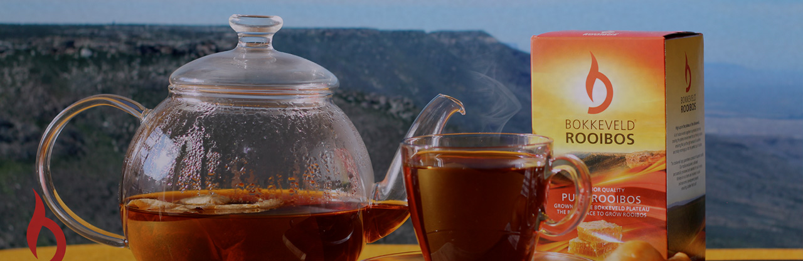
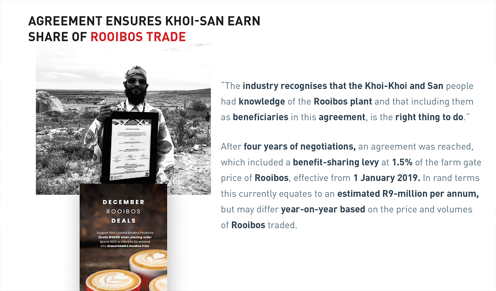

Aenean ornare velit lacus, ac varius enim lorem ullamcorper dolore aliquam.
IT'S A DEAL: Celebrating the signing of a rooibos plant benefit-sharing deal are, back from left, Khoi-San community representative Barend Salomo, environment minister Barbara Creecy, Khoi-San Council chair Cecil Le Fleur, San Council chair Collin Louw, SA Rooibos Council chair Martin Bergh and Stanley Peterson
After four years of negotiations, an agreement will result in the Khoi-Khoi and San communities reaping about R9m a year in benefits from the commercialisation of the rooibos plant. The agreement was recently signed by the SA Rooibos Council, the National Khoi-San Council and SA San Council. The two groups signed on behalf of the two San communities who were acknowledged as the original knowledge bearers of the roiboos plant. The stakeholders agreed on a benefit-sharing levy of 1.5% of the farm gate price of rooibos from January 1 2019, equating to about R9m a year, depending on the price and volumes of rooibos traded.
A celebratory ceremony to mark the historic occasion was held in !Khwa ttu, near Cape Town, with representatives from the department of environment, forestry and fisheries, the rooibos industry and Khoi and San councils present. Environment minister Barbara Creecy described the signing as “an observance of the correction of a past injustice — a wrong that is being righted”. “The successful completion of this negotiation, and the implementation of this agreement is a very good story for all of us to tell considering that rooibos is an existing industry with prospects for transformation, where small players in the value chain have the potential to become big players in a global industry,” she said. National Khoi-San Council chair Cecil Le Fleur said the communities considered this a remarkable achievement and welcomed the acknowledgment of their heritage.
“This is something we have been working very hard on for nine years,” he said. “Beyond the monetary value of this deal, we celebrate that the rooibos industry and the government recognise the indigenous knowledge of the Khoisan people through rooibos. “We regard that as an acknowledgment of our position in this country as being the first people who occupied the southern part of the African continent,” Le Fleur said. He said discussions towards establishing a practical plan to distribute the levies to the Khoisan communities across SA would soon commence. “What we envisaged and proposed to communities is that we will not dish out money, but we will rather encourage to draw up businesses and projects that will uplift the communities for generations to come and will be accessible to the whole community,” he said.
The agreement is in line with the values of the Nagoya Protocol, to which SA is a signatory. It requires industries that trade in indigenous biological resources such as rooibos to share benefits with traditional knowledge holders in a fair and equitable way. SA Rooibos Council spokesperson Dawie de Villiers said the right thing had been done. “We are now able to discover more about the heritage of a uniquely SA product. “This is an industry-wide agreement and not just one company, which is a milestone because it’s the first time it has been done anywhere,” he said. He said the agreement had taken a long process of discussion between relevant stakeholders. When the environment department first recognised the Khoi-Khoi and San people as the rightful traditional knowledge holders of rooibos, a working group was formed to negotiate on a benefit-sharing model in accordance with the National Environmental Management Biodiversity Act.
Sed varius enim lorem ullamcorper dolore aliquam aenean ornare velit lacus, ac varius enim lorem ullamcorper dolore. Proin sed aliquam facilisis ante interdum. Sed nulla amet lorem feugiat tempus aliquam.